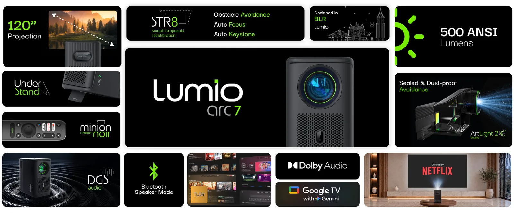

- The Short Answer
- Arc 7 2026 vs Arc 7: Full Spec Comparison
- Why We Built It: What Owners Told Us
- What Arc Light Engine 2 Changes
- How LCD Projector Engines Are Evolving
- Getting More Light Out of a Small Engine
- What 500 ANSI Lumens Means in a Real Room
- The Bigger Image, and What It Costs
- What Stayed Exactly the Same
- Which One Should You Buy?
- How to Tell Which Arc 7 You Have
- Frequently Asked Questions
- Sources
I work on the Arc projectors at Lumio, so take this as the view from inside the product team rather than a review. I will stick to what the published specifications say, what our owners told us, and what the numbers mean once the projector is in your living room.
The Short Answer
The Lumio Arc 7 2026 is the Arc 7 with a new light engine. Arc Light Engine 2 uses a clearer LCD chip in a sealed optical design, which raises brightness from 400 to 500 ANSI lumens, contrast from 1500:1 to 1700:1, colour from 41.6% to 45.76% of DCI-P3, and the image range from 40–100 inches to 45–120 inches. Storage doubles to 32 GB, and it runs Google TV with Gemini. The body, weight, speakers, auto focus and keystone features, and warranty are unchanged.

Arc 7 2026 vs Arc 7: Full Spec Comparison
Rows in bold are the ones that changed. Everything else is identical between the two models.
| Specification | Arc 7 (2025) | Arc 7 (2026) |
|---|---|---|
| Light engine | Arc Light Engine (sealed) | Arc Light Engine 2 (clearer LCD chip, sealed) |
| Brightness | 400 ANSI lumens | 500 ANSI lumens |
| Native contrast | 1500:1 | 1700:1 |
| Dynamic contrast | Not specified | 5,000,000:1 |
| Colour gamut | 41.6% DCI-P3 | 45.76% DCI-P3 |
| Image size | 40–100 inches | 45–120 inches |
| Storage | 16 GB | 32 GB |
| Resolution | Native Full HD, 1920 × 1080 | |
| Platform | Google TV on Android 14, Google Cast | Google TV with Gemini on Android 14, Google Cast |
| Memory | 2 GB RAM | |
| Auto setup (STR8) | Auto focus, auto keystone, screen fit, obstacle avoidance | |
| Speakers | 2 × 8 W with passive radiator | |
| Connectivity | HDMI 2.0 (ARC), USB 2.0, 3.5 mm out, dual-band Wi-Fi 5, Bluetooth 5.1 | |
| Size and weight | 127.6 × 197.2 × 214.8 mm, 2.36 kg | |
| Power and fan noise | About 120 W, 30 dB or less at one metre | |
| Model number | LFG2-BHJS | LFG2-BIJT |
Why We Built It: What Owners Told Us
Since the Arc launched, we have surveyed buyers a few weeks after purchase. Across four waves between September 2025 and June 2026, more than 500 Arc owners answered [1]. Three findings shaped the 2026 model.
1. Brightness was the most common request, every time
In every wave, "brightness feels low" was the most common issue Arc 7 owners selected, or tied for it, flagged by between roughly a third and a half of them. In most waves it was also the lowest-rated feature on the scorecard. Owners liked the design, the picture and Google TV. What they wanted was more light.
2. Most owners project onto a bare wall
Roughly three in four Arc 7 owners project onto a painted wall rather than a projection screen. That matters more than it sounds. A painted wall typically reflects less light back towards you than a projection screen does, so every lumen lost before the image reaches the wall shows up as a dimmer picture. On a bare wall, brightness headroom is the whole game.
3. Most are first-time projector buyers
About four in five Arc 7 owners told us this was their first projector. Their reference point is not another projector. It is the television they already own, which is far brighter than any home projector. That gap is the honest root of most brightness complaints, and it is why we spent the 2026 engineering budget on light rather than on features.
What Arc Light Engine 2 Changes
The Arc is an LCD projector. Light from the LED passes through an LCD panel that forms the image, then through the lens to the wall. In an LCD light path, most of the light never reaches the screen: polarisers, the panel itself and the optics each take their share. So the most effective way to get more light out is not a hotter LED. It is a panel that wastes less of the light already there.
That is the core of Arc Light Engine 2: a clearer LCD chip. A panel that transmits more light lets more of the LED's output reach the wall, at the same power draw (about 120 W on both models) and the same fan noise. In practice the engine improves four things at once:
- Brightness: 500 ANSI lumens against 400, a 25% increase
- Uniformity: brightness is more even from the centre of the image to the corners
- Contrast: 1700:1 native against 1500:1, about 13% higher
- Colour: 45.76% of DCI-P3 against 41.6%, a gamut about 10% wider
Why the optical path is still sealed
In my article on LED projector lifespan, I argued that the LCD optical system, not the LED, is the real weak link in a projector's life, and that one of the questions to ask before buying is whether the optical path is sealed. Both Arc 7 models use a sealed light engine, and Arc Light Engine 2 keeps that design, so dust stays out of the path between the panel and the lens. A sealed engine does not stop an LCD panel from ageing, but it removes the most common reason a projector's picture degrades early.
A note on the 5,000,000:1 figure
The 2026 model also lists a dynamic contrast ratio of 5,000,000:1. Dynamic contrast compares the brightest and darkest frames the projector can produce over time, with the light source adjusting between scenes. Native contrast (1700:1) is what you see between the brightest and darkest parts of a single frame. When you compare projectors, compare native contrast with native contrast. The dynamic figure is real, but it is a different measurement.
How LCD Projector Engines Are Evolving
To see why a "clearer LCD chip" matters, it helps to follow the light through a single-panel LCD projector like the Arc.
An LED produces light, a collimating lens straightens it, and it passes through an input polariser, the LCD panel that forms the image, an output polariser (the analyser) and the projection lens. Two of those stages account for most of the loss.
Loss 1: the polariser
An LCD only works with light polarised in one direction, but an LED emits light in every polarisation. The input polariser simply discards the rest. Industry patent literature puts it plainly: about half the light is filtered out at the polariser, and the total polarisation efficiency is often only 38–45% [4]. The discarded light does not vanish. It becomes heat inside the engine, which the fan then has to remove.
Loss 2: the pixel aperture
Each pixel on an LCD panel is surrounded by wiring and transistors that light cannot pass through. The share of each pixel that actually transmits light is the aperture ratio. The rest is a grid of tiny walls standing in the light path. And the higher the resolution on a panel of a given size, the more of the panel those walls occupy.
Where the progress has come from
Almost every gain in LCD projection over the past two decades has come from attacking those two losses rather than from making the light source hotter:
- Clearer panels. Finer manufacturing shrinks the light-blocking wiring around each pixel. Epson, for example, reports raising the aperture ratio of one of its projector panels by more than 50% over ten years using microfabrication [5].
- Microlenses. A tiny lens over each pixel steers light that would have hit the pixel walls into the open aperture instead. Epson credits its double-microlens arrays with a 30% gain in optical efficiency [5].
- Polarisation recycling. Instead of absorbing the wrong polarisation, a reflective polariser and a quarter-wave plate send it back to be converted and reused. One study of an LED projector module measured a 22.67% brightness gain at the LED module and 11.14% at the projector's output [6].
- Better illumination design. Collimating optics shape the LED's light to hit the panel evenly. A 2023 study of a compact single-panel LCD design shortened the illumination system by about 29% while raising screen uniformity from 73.3% to 90.1% [7].
The pattern is consistent. The light source matters, but in an LCD projector the panel and the optics around it decide how much of that light reaches your wall.
Getting More Light Out of a Small Engine
Brightness and size pull against each other in a projector. The obvious way to get more light is a more powerful LED, but more power means more heat, more heat means a bigger heatsink and fan, and that means a bigger, louder box. A compact projector cannot win by brute force.
There is also a limit in the physics. Optical designers call it étendue: roughly, how spread out a beam of light is in size and angle. It cannot be reduced by any lens [8]. A small panel can only accept light arriving within a narrow cone, so in a small engine, light that the optics cannot squeeze into that cone is simply wasted. That is why compact projectors depend so heavily on efficiency rather than raw output.
This is the approach Arc Light Engine 2 takes. Instead of a more powerful light source, it uses a clearer LCD chip, so less of the light already inside the engine is blocked on its way to the lens. The results show up in the spec sheet:
- 25% more light from the same power. Both Arc 7 models draw about 120 W, so the 2026 model delivers roughly a quarter more ANSI lumens for every watt.
- No bigger, no louder. The body is unchanged at 127.6 × 197.2 × 214.8 mm, about 5.4 litres, and the fan stays at 30 dB or less at a metre.
- More even, and more colourful. Brightness is more uniform across the image, and the colour gamut is about 10% wider.
- Still sealed. The optical path stays closed to dust, which protects that efficiency over the years rather than only on day one.
That is the real engineering story of the 2026 model. The headline is 500 ANSI lumens, but the achievement is getting there inside the same small, quiet body.
What 500 ANSI Lumens Means in a Real Room
Twenty-five percent more light is a visible step, not a transformation. Human perception of brightness rises more slowly than the light itself [2], so a 25% increase in lumens looks noticeably brighter, but not 25% brighter.
Where it shows most is in the conditions our owners described: a bare wall, and a room that is not completely dark. Lumio's own guidance is that both Arc 7 models handle an afternoon room with the curtains drawn, and that the 2026 model holds its picture a little better there. No home projector at this size beats an open window. Closing the curtain on the wall you project onto still changes the picture more than any setting does.
If you are comparing the Arc 7 2026 with other projectors, compare ANSI lumens with ANSI lumens. A "lumens" number on a box without the word ANSI is often measured at the light source, before the optical losses, and can be several times higher than what reaches the wall. I explained why in Why LED Lumens Are Misleading.
The Bigger Image, and What It Costs
The Arc 7 2026 projects up to 120 inches, against 100 on the 2025 model. Image size is set by distance: the further back the projector sits, the larger the picture.
| Image size (diagonal) | Distance from wall | Arc 7 (2025) | Arc 7 (2026) |
|---|---|---|---|
| 60 inches | 165 cm (5.4 ft) | Yes | Yes |
| 80 inches | 219 cm (7.2 ft) | Yes | Yes |
| 100 inches | 277 cm (9.1 ft) | Yes | Yes |
| 120 inches | about 332 cm (10.9 ft) | No | Yes |
Add 30–45 cm of clear space behind the projector for airflow. A 100-inch image therefore asks the room for a little over ten feet, and a 120-inch image for about twelve.
There is a trade-off the spec sheet does not spell out. The same light spread over a bigger image makes every part of it dimmer. A 120-inch image has 44% more area than a 100-inch one, so it uses up more than the 2026 model's extra 25%.
So the rule of thumb is simple. Use the extra size in a dark room, for a film night. If you watch with some light in the room, stay at 80–100 inches and let the 2026 model's extra brightness work for you.
What Stayed Exactly the Same
Just as deliberate as what changed is what we left alone. Owners rated the Arc 7's design and its Google TV experience among its strongest points, so the 2026 model keeps:
- The same body: 127.6 × 197.2 × 214.8 mm and 2.36 kg, with the same tripod thread on the base
- The same audio: two 8 W speakers with a passive radiator
- The same platform foundation: licensed Google TV on Android 14, with Google Cast and certified streaming apps, now with Gemini on the 2026 model
- The same STR8 setup: auto focus, auto keystone, screen fit and obstacle avoidance
- The same power and noise: about 120 W and 30 dB or less at a metre, so the extra brightness does not come with a louder fan
- The same support: one year of warranty on the projector and carry-in service
The one quiet addition is storage: 32 GB instead of 16 GB, which leaves more room for apps and updates over the projector's life.
Which One Should You Buy?
The Arc 7 2026 is priced at ₹34,999 and is available on Amazon, Flipkart and the Lumio Store. Prices move with offers and sale events, so check the listing for the exact price on the day you buy. Both models are on sale side by side. Here is how I would choose.
| Your situation | Better fit |
|---|---|
| You watch with some light in the room, or in the late afternoon | Arc 7 2026 |
| You want an image bigger than 100 inches | Arc 7 2026 |
| You project onto a bare wall and want every bit of headroom | Arc 7 2026 |
| You watch mostly at night, on an 80–100 inch image | Either. Compare the prices on the day |
| You already own a 2025 Arc 7 and are happy with it | Keep it |
If you already own the Arc 7 (2025)
Your projector is not obsolete. Its warranty, service and software updates continue as before, and it has already moved from Android 11 to Android 14, so it runs Google TV on the same Android 14 version as the 2026 model. What no update can give it is the new picture: brightness, contrast, colour and the larger image range come from Arc Light Engine 2, which is hardware. Upgrade only if brightness is the thing you notice most.
How to Tell Which Arc 7 You Have
The two look identical, so check the model number on the product label or the carton:
- Arc 7 (2026): LFG2-BIJT
- Arc 7 (2025): LFG2-BHJS
Keep it to hand if you contact support, because brightness, colour, screen size and storage are the answers that differ between the two.
Frequently Asked Questions
What is the difference between the Lumio Arc 7 2026 and the Arc 7?
The Arc 7 2026 uses Arc Light Engine 2. It is rated at 500 ANSI lumens against 400, 1700:1 contrast against 1500:1, 45.76% of DCI-P3 against 41.6%, projects 45 to 120 inches against 40 to 100, and has 32 GB of storage against 16 GB. Everything else is the same.
Is the Lumio Arc 7 2026 brighter than the Arc 7?
Yes, 25% more ANSI lumens, with more even brightness across the image. It is a visible step rather than a transformation, and using the 120-inch size spends some of that extra light.
Can a software update give the Arc 7 (2025) the new picture?
No. The picture changes come from the new optical hardware. Updates keep the 2025 model current on Google TV, and it already runs Android 14.
Should I upgrade from the Arc 7 (2025)?
Only if brightness is the thing you notice most, for example if you watch with some light in the room or want an image larger than 100 inches. Otherwise, the 2025 model remains fully supported.
How far from the wall does the Arc 7 2026 need to be for 120 inches?
About 10.9 feet (roughly 3.3 metres), plus 30–45 cm of clear space behind the projector.
Is the Lumio Arc 7 2026 4K?
No. Like every Arc, it projects native Full HD (1920 × 1080) and plays video up to 1080p at 60 fps. HDR10 and HLG content plays, tone mapped to the projector's range.
What is the price of the Lumio Arc 7 2026?
₹34,999, on Amazon, Flipkart and the Lumio Store. Prices change with offers, so check the listing for the current price.
Does the Lumio Arc 7 2026 have Gemini?
Yes. It runs Google TV with Gemini, on Android 14.
Arc 7 2026 product photograph and feature overview: Lumio
Sources
- Lumio Arc post-purchase owner surveys, four waves, September 2025 to June 2026. Aggregate figures; individual responses are not published.
- "Stevens's power law", on how perceived brightness scales with physical intensity. Wikipedia
- Lumio Arc 7 2026 product page. lumio.co.in
- "High-efficiency illumination system for LCD projector and projection method thereof," US Patent 11,366,376 B2. Google Patents
- "Microdisplay Technology." Seiko Epson Corporation. Epson
- Y. Chi, W.P. Tang, S.L. Chen and C.J. Tsai, "Polarization Recycling LED Module for Pico Projector." CiteDrive
- P.-Y. Lin and J.-W. Pan, "Compact single-panel LCD projector with high uniformity," Applied Optics 62(29), 7783–7790 (2023). Optica
- "Étendue." Wikipedia